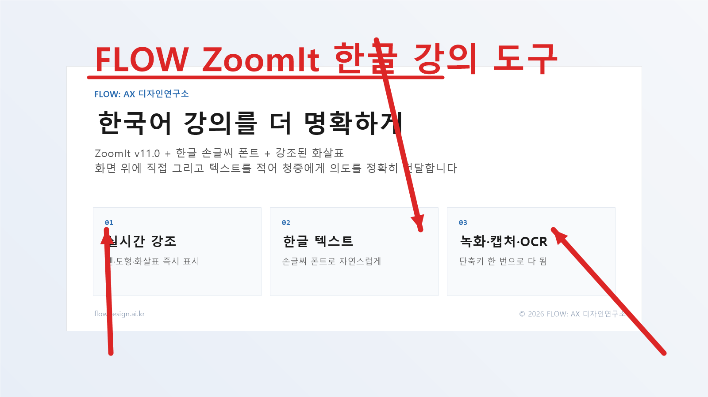
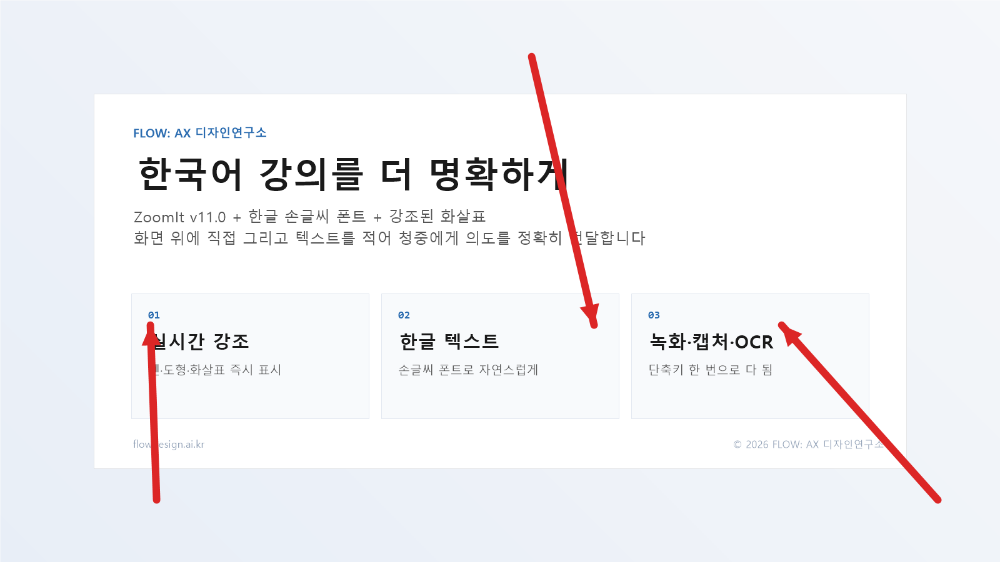
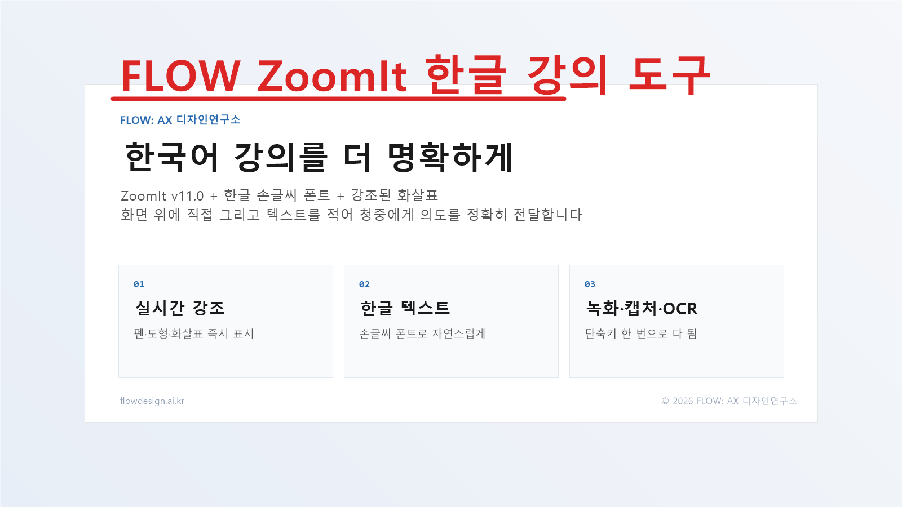
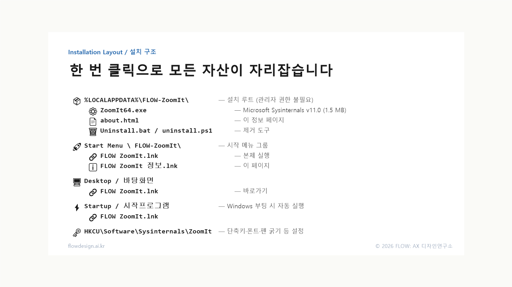

한국어 강의·워크숍·코칭을 위한 화면 강조 + 캡처 + 녹화 종합 도구A Korean-friendly distribution of Microsoft Sysinternals ZoomIt v11.0 — bundled with handwriting fonts, larger arrows, and bilingual UX for trainers, coaches, and presenters.

Ctrl+2 그리기 모드에서 한글 텍스트 + 화살표 동시 사용 — 빨강 펜, 두께 15, 나눔바른펜 Bold 폰트.Draw mode (Ctrl+2): Korean handwriting text + arrows on a slide. Red ink, pen width 15, Nanum Barun Pen Bold font.
왜 만들었나Why this exists
Microsoft Sysinternals ZoomIt은 30년 다듬어진 검증된 화면 도구지만,
구버전(v4.52)은 한국어 텍스트 입력·렌더링이 불가능했습니다.
이를 우회하려 자체 IME를 가진 Electron 기반 ZoomIt-Pro를 5번 빌드했지만
transparent 윈도우와 한국어 IME의 비양립으로 모두 실패.
2026년 5월, ZoomIt v11.0이 한국어를 정상 지원함을 확인하고
"개발 대신, v11.0을 한국어 강의 환경에 맞게 패키징"하는 방향으로 전환.
이 설치 도구는 그 산출물입니다 — 본체 갱신 + 손글씨 폰트 + 화살표 시인성 + 자동 시작까지
한 번에 세팅됩니다.
Microsoft Sysinternals ZoomIt is a battle-tested screen-annotation tool, but its older
v4.52 build could not render Korean characters. We tried five Electron-based "ZoomIt-Pro"
rewrites with custom IMEs — all failed due to transparent-window/Korean-IME incompatibility.
In May 2026 we verified that ZoomIt v11.0 handles Korean correctly out of the
box, and pivoted from "rewrite" to "package v11.0 for Korean classroom use."
This installer is the result: it ships the v11.0 binary plus opinionated defaults
(handwriting font, larger arrowheads, autostart) so Korean trainers can install once and teach.
9가지 핵심 기능9 core features
Ctrl+1정적 줌Static Zoom
화면 일부 확대 정지 표시. 마우스휠로 배율 조절. 코드·UI 부분 강조.
Freeze a zoomed-in region. Wheel adjusts magnification. Use to highlight code or UI details.
Ctrl+2그리기Draw
화면 위에 직접 펜·도형·텍스트 작성. T로 텍스트 모드, 한/영 전환으로 한글 입력.
Annotate over the live screen. Press T for text mode; toggle Korean IME with 한/영 to type Hangul.
Ctrl+3휴식 타이머Break Timer
카운트다운 타이머. 워크숍 쉬는 시간·아이스브레이크에 활용.
Full-screen countdown timer with custom sound and background — for breaks and icebreakers.
Ctrl+4라이브 줌Live Zoom
실시간 화면 확대. 줌 상태에서 마우스·키보드 그대로 사용 가능.
Real-time magnification — keyboard and mouse remain interactive while zoomed.
Ctrl+5화면 녹화 ★Recording ★
MP4/GIF 녹화. 마이크 + 시스템 사운드 동시 캡처. 트리밍 대화상자 내장.
MP4/GIF screen recording with mic + system audio. Built-in trim dialog.
Ctrl+6화면 캡처Snip
드래그 영역 스니핑 후 클립보드/파일 저장.
Drag-region snip to clipboard or file. Quick screenshots for chat or docs.
Ctrl+7데모 타입 ★Demo Type ★
미리 작성한 텍스트를 자동 타이핑. 라이브 코딩·시연 시나리오 재생.
Auto-type a saved text file at a chosen speed. Great for live-coding demos.
Ctrl+8파노라마 캡처 ★Panorama Snip ★
긴 스크롤 영역 자동 합성 캡처. 웹페이지 전체·긴 코드 한 장으로.
Auto-stitch a long scrollable region into one image — full pages or long code in one shot.
Ctrl+Shift+6OCR 캡처 ★OCR Snip ★
캡처와 동시에 화면 텍스트 자동 인식 → 클립보드.
Snip + auto-OCR. Recognized text lands in your clipboard, Korean and English supported.
화살표가 더 잘 보이게Bigger, clearer arrows

PenWidth=15 적용으로 헤드 좌우 폭이 충분히 시인. Shift+드래그로 직선 + 화살표 동시 생성.PenWidth=15 makes arrowheads visibly wide. Shift+drag draws a straight line with auto arrowhead.
한글 텍스트 자연스럽게Natural Korean text

나눔바른펜 Bold — 손글씨 느낌으로 강의 분위기를 살림. Ctrl+2 → T → 클릭 → 한/영 → 입력.Nanum Barun Pen Bold gives a friendly handwriting tone. Workflow: Ctrl+2 → T → click → 한/영 → type.
그리기 모드 세부 단축키Draw mode shortcuts
R/G/B/Y/O/P색상: 빨강 / 초록 / 파랑 / 노랑 / 주황 / 분홍Pen color: Red / Green / Blue / Yellow / Orange / PinkDrag자유 펜Free-pen strokeShift+Drag직선 + 끝 화살표Straight line with arrowheadCtrl+Drag사각형RectangleTab+Drag타원EllipseWheel펜 굵기 조절Adjust pen widthT텍스트 모드Text input modeCtrl+Z되돌리기UndoESC그리기 종료Exit draw mode
FLOW 기본 설정FLOW defaults
본체EngineZoomIt v11.0 (Microsoft Sysinternals · 2026-03)설치 위치Install path%LOCALAPPDATA%\FLOW-ZoomIt\기본 폰트Default font나눔바른펜 Bold (Nanum Barun Pen Bold) — Hangul charset, antialiased펜 두께Pen width15 (화살표 헤드 좌우 시인성 우선)(arrowhead width tuned for visibility)펜 색상Pen color빨강 (Options 에서 변경)Red (change in Options)자동 실행AutostartWindows 시작프로그램 등록Registered in Windows Startup관리자 권한Admin rights불필요Not required (per-user install)
설치 후 자산 위치What gets installed where

관리자 권한 없이 사용자 영역에만 설치되며, 시작 메뉴·바탕화면·시작프로그램에 바로가기 자동 생성.Per-user install — no admin needed. Shortcuts auto-created in Start Menu, Desktop, and Startup.
고급 옵션 위치Where to find advanced options
트레이 아이콘 우클릭 → Options... 에서 다음 항목 조정:Right-click the tray icon → Options...:
Type — 폰트, 펜 색상, 펜 두께, 텍스트 폰트 크기 font, pen color, pen width, text size
Record — MP4/GIF, 스케일링, 마이크/시스템 오디오 MP4/GIF, scaling, mic / system audio
Snip — 스크린샷 저장 경로, OCR 언어 screenshot save path, OCR language
Demo Type — 자동 타이핑 텍스트, 속도, user-driven 모드 auto-type file, speed, user-driven mode
한글 입력 시 주의Korean IME caveats
Windows IME 후보창이 좌측 상단에 뜰 수 있음 — ZoomIt이 IME 위치를 캔버스 커서로 고정하지 못하는 한계.The Windows IME composition window may appear in the top-left because ZoomIt does not anchor the IME to the cursor.
한글 입력 자체에는 영향 없음. 거슬리시면 설정 → 시간 및 언어 → 한국어 → Microsoft IME → 옵션 → 모양 에서 후보창 숨김 가능.Input itself works fine. To hide the floating window: Settings → Time & Language → Korean → Microsoft IME → Options → Appearance.
제거Uninstall
%LOCALAPPDATA%\FLOW-ZoomIt\Uninstall.bat 실행. 설치 파일·바로가기·자동 실행 모두 제거. 단축키·폰트 레지스트리는 유지/삭제 선택 가능. — removes files, shortcuts, and autostart. Registry settings (hotkeys, font) are kept by default; you can choose to wipe them.
라이선스License
ZoomIt — Microsoft Sysinternals Software License Microsoft Sysinternals Software License
Nanum Fonts — NAVER 무료 사용 라이선스 NAVER free-use license
FLOW packaging scripts — MIT License (FLOW: AX 디자인연구소) MIT License (FLOW: AX Design Lab)